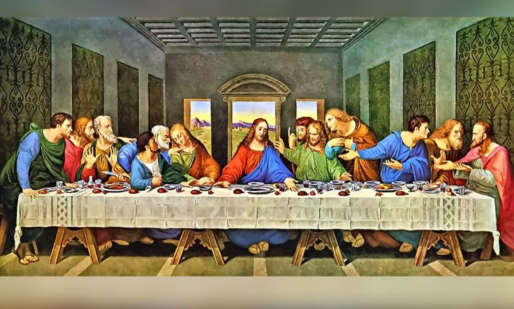

La Última Cena
Ilustración de la famosa obra de Leonardo da Vinci.

Ilustración de la Última Cena de Jesucristo.
| Autor |
Leonardo da Vinci |
| Año de creación |
1495-1498 |
| Estilo |
Mural, al temple y óleo sobre yeso. |
Otras Obras
- San Jerónimo
- La Virgen, el Niño Jesús y Santa Ana
- San Juan Bautista
- Anunciación